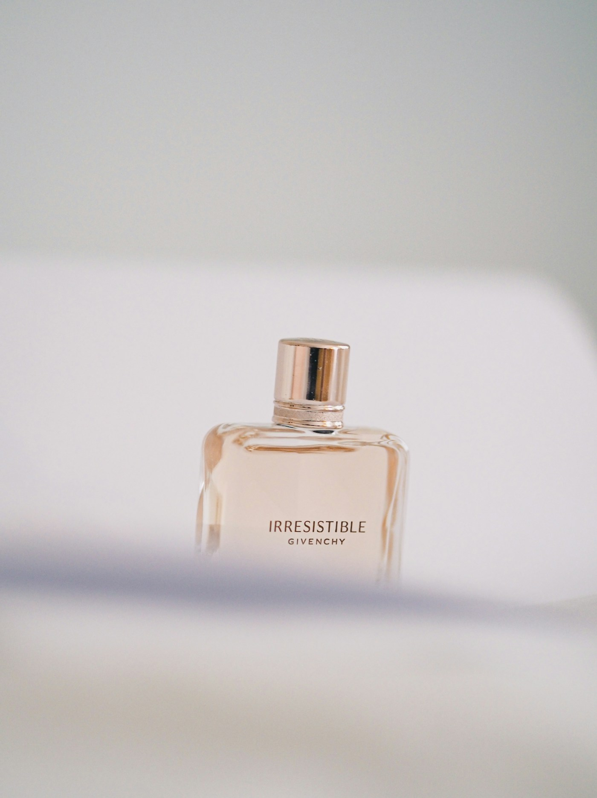

No existe una fórmula universal para el verano. Si el calor hace que los aromas dulces te resulten pesados, probá primero una salida cítrica o herbal y dejá que se asiente antes de decidir.
Cítrico y aromático
Armaf Odyssey Aqua
Abre con toronja, naranja y artemisa; después aparecen lavanda y menta, con ciprés, pachulí y ambroxan al fondo. Si te gustan los cítricos con un centro herbal, puede ser una opción para el día o la oficina.
Probalo en tu piel y en el clima donde pensás llevarlo para ver cómo evoluciona.
Frutal y acuático
Rasasi Hawas Ice
Combina manzana, bergamota, limón y anís con un acorde marino, flor de azahar, ciruela y cardamomo. Su fondo de almizcle, ámbar, madera flotante y musgo cristalino puede interesarte si buscás una impresión frutal y marina con un cierre amaderado.
La descripción no significa que sea ligero para todo el mundo: si te molestan los perfumes intensos o dulces, empezá con una sola aplicación y observá cómo evoluciona.
Tropical y cremoso
Lattafa Yara Tous
Mezcla mango, coco y maracuyá con jazmín, heliotropo y flor de azahar. La vainilla, el almizcle y el cashmeran le dan un lado dulce y cremoso, para quien disfruta los frutos tropicales más que un cítrico seco.
Si disfrutás los perfumes dulces y tropicales, Yara Tous ofrece una alternativa cremosa para el día o una salida informal.
Antes de comprar
Cómo probar un perfume con calor
- Probá una fragancia a la vez en la piel, no solo en una tira de papel.
- Empezá con poca cantidad; si te gusta después de un rato, ajustá la aplicación otro día.
- Si vas a comprar una botella grande, preguntá por una muestra o decant cuando esté disponible.
- Revisá el tamaño y la concentración de la presentación que querés llevar.